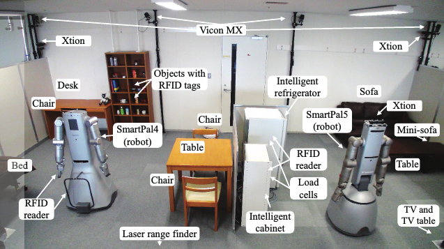
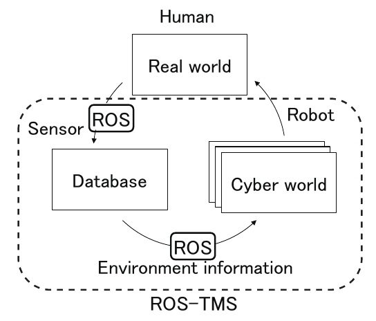
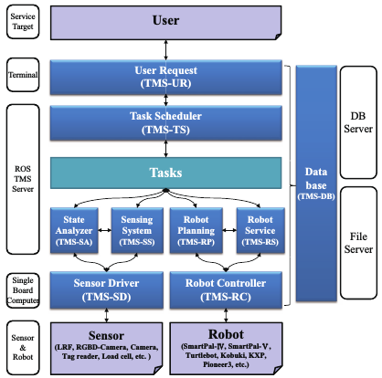
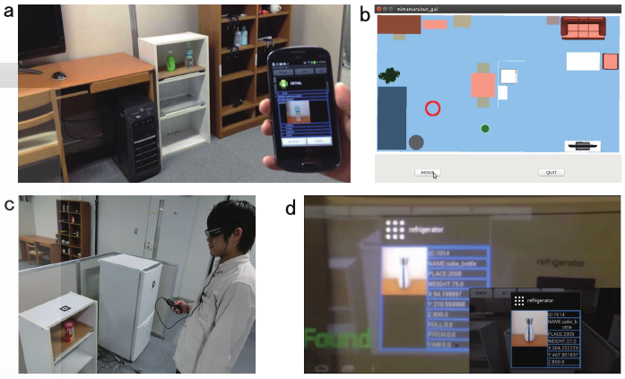
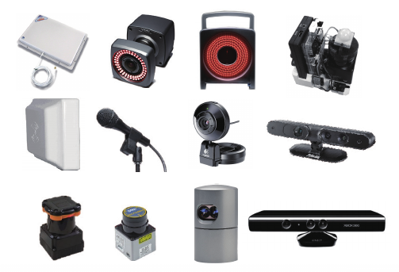
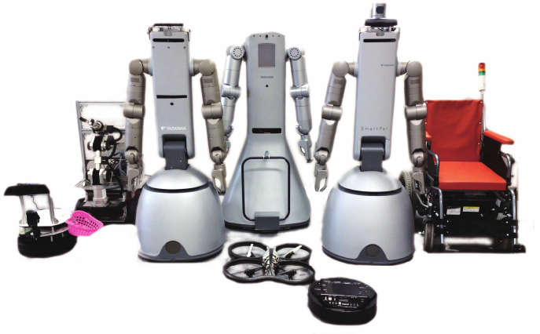

ROS-TMS
It is a service robot system with an informationally structured environment referred to the ROS-TMS*.This system enables the integration of various data from distributed sensors, as well as storage of these data in an on-line database and the planning of the service motion of a robot using real-time information about the surroundings.
Informationally Structured Environment
The emerging synthesis of information technology (IT), network technology (NT), and robot technology (RT) is one of the most promising approaches to realize a safe, secure, and comfortable society for the next generation. Human-centered systems require, in particular, sophisticated physical and information services which are based on sensor networks, ubiquitous computing, and intelligent artifacts. Information resources and the accessibility within an environment are essential for people and for robots. The environment surrounding people and robots should have a structured platform for gathering, storing, transforming, and providing information. Such an environment is called informationally structured space. (by IEEE Symposium on Robotic Intelligence in Informationally Structured Space)
A considerable number of studies have been performed in the area of informationally structured environments/spaces to provide human-centric intelligent services. Informationally structured environments are referred to variously as home automation systems, smart homes, ubiquitous robotics, kukanchi, and intelligent environments/spaces, depending on the field of research and the professional experience of the researcher. But the common key point is not changed, the common idea in assistive environments consists of gathering information about people's activities together with their surroundings in a way that an intelligent decision system can support the persons for improvement of the quality of life. In this thesis, we focus on informationally structured environment platform for service robot, which can be available to assist people in their daily activities and environments.
Concept of ROS-TMS
The ROS-TMS in Informationally Structured Environment (ISE) can be considered to be a robotic implementation of Cyber Physical System (CPS) which has been receiving much attention in recent years. CPS is a framework to develop an efficient and affluent society by solving various issues in real world utilizing a great amount of computer resources in cyber world. In recent years, the concept of IoT (Internet of Things), which connects all the objects and machines through the internet and controls them efficiently, has been becoming very popular. Besides, the CPS is to forecast an ideal world based on a wealth of sensory information obtained through IoT and huge computer power in cyber world, and plan and execute optimum strategies for realizing the ideal physical world. In order to implement the CPS, the ROS-TMS has three primary components, i.e., real world, database, and cyber world components. A distributed sensing system senses events occurring in the real world, such as user behavior or user requests, and the current situation of the real world, such as the positions of objects, humans, and robots. The gathered information is then stored in the database. Appropriate service commands are planned using the environmental information in the database and simulated carefully in the cyber world using simulators, such as Choreonoid and Gazebo. Finally, service tasks are assigned to service robots in the real world.
Functions implemented in the ROS-TMS
- Communication with sensors, robots, and databases
- Storage, revision, backup, and retrieval of real-time information in an environment
- Storage, revision, backup, and retrieval of real-time information in an environment
- Maintenance and providing information according to individual IDs assigned to each object and robot
- Notification of the occurrence of particular predefined events, such as accidents
- Task schedule function for multiple robots and sensors
- Human-system interaction for user requests
- Real-time task planning for service robots
Features of ROS-TMS
- Modularity: The ROS-TMS consists of 73 packages categorized into 11 groups and 151 processing nodes. Re-configuration of structures, for instance adding or removing modules such as sensors, actuators, and robots, is simple and straightforward owing to the high flexibility of the ROS architecture.
- Scalability: The ROS-TMS is designed to have high scalability so that it can handle not only a single room but also a building and a town.
- Diversity: The ROS-TMS supports a variety of sensors and robots. For instance, Vicon MX (Vicon Motion Systems Ltd.), TopUrg (Hokuyo Automatic), Velodyne 32e (Velodyne Lidar), and Oculus Rift (Oculus VR) are installed in the developed informationally structured platform for positioning and human-system interaction. SmartPal-IV and V (Yaskawa Electric Corp.), AR Drone (Parrot), TurtleBot2 (Yujin Robot Co., Ltd.), a wheelchair robot, and a mobile robot with a 5-DOF manipulator are also provided in order to accomplish a variety of service tasks.
- Safety: Data gathered from the real world is used to perform simulations in the cyber world in order to evaluate the safety and efficiency of designed tasks. According to the simulation results, proper service plans are designed and provided by service robots in the real world.
- Privacy protection: One important restriction in our intelligent environment is to install a small number of sensors to avoid interfering with the daily activity of people and to reduce the invasion of their privacy as far as possible. For this reason, we do not install conventional cameras in the environment. Although the robots are equipped with several cameras, these cameras are only used in certain restricted scenarios.
- Efficiency: Sensors installed in an environment can be shared with robots and tasks, and thus we do not need to equip individual robots with numerous sensors. In addition, most sensors are processed by low-cost single-board computers in the proposed system. This concept has an advantage especially for the system consisting of multiple robots since robots can share the resources in the environment. Currently, the cost of a distributed sensor network may be higher than the cost of a single robot. However, we believe that distributed sensor network (or Internet of Things, IoT) will become a standard facility in our society in the near future, and the cost of a sensor network will be greatly reduced since all the devices will be designed to be connected each other.
Architecture of ROM-TMS
The below figure shows the overall architecture of ROM-TMS. This system is composed of five components: user, sensor, robot, task, and data. These components are also composed of sub-modules, such as the User Request sub-module for the user component, the Sensor Driver sub-module, the Sensing System and State Analyzer sub-modules for the sensor component, the Robot Controller, the Robot Motion Planning, and the Robot Service sub-modules for the robot component, the Task Scheduler sub-module for the task component, and the Database sub-module for the data component. Brief explanations of each node group are presented below.
Database (TMS-DB)
TMS-DB is composed of the database, DB_Writer, which writes the information, DB_Reader, which performs information readout, and DB_manager, which manages the stored data. Implementation of the database itself is performed using MySQL or MongoDB, and, currently, information is stored as follows:
- Registered information about the robots, such as their shape and appearance
- Information related to the sensors embedded in the environment
- Static environment information, such as maps
- Dynamic information, such as the calculated position of moving objects
- Task information classified by robot services
User Request (TMS-UR)
TMS-UR can receive service requests from users using remote controllers, smartphones, and tablets, as well as other portable devices. The below figure shows some examples of TMS-UR including a smartphone, a tablet, and wearable glasses. For example, when a user calls a robot, the user request is corrected by TMS-UR and sent to TMS-TS. Then the requested task is executed by the robot using some modules such as TMS-RP.
Examples of TMS-UR: (a) Object search system using a smartphone, (b) Navigation system for a wheelchair robot using a tablet, (c and d) a smart glasses (Moverio, Epson) to display object information using AR technology.
Task Scheduler (TMS-TS)
The task scheduler (TMS-TS) manages the execution of service tasks such as start, suspension, resuming, and rescheduling if an error occurs. For example, when a task is requested by a user, the task scheduler accesses to the database, and obtains the sequence of subtasks for the desired task. Then the scheduler plans the timing of execution of each subtask and produces input scripts for a task-execution machine. The task-execution machine issues a sequence of commands to the robot controller module (TMS-RC) and execute subtasks appropriately.
Example of TMS-TS
Sensor Driver (TMS-SD)
TMS-SD is a package for obtaining raw data from the sensor. We use various sensors, such as an LRF, an RGB-D camera, a USB camera, a Velodyne LiDAR sensor, and a Vicon motion capture.
Sensing System (TMS-SS)
By interpreting the data acquired from various environment sensors, more precise information concerning the environment can be obtained. TMS-SS consists of a floor sensing system (FSS) for detecting objects on the floor using a laser range finder, an intelligent cabinet system (ICS) to detect the type and position of objects through RFID tag readers and load cells on the cabinet, motion tracking using Xtion and Kinect, location tracking of moving objects using a Vicon camera, and object detection using RGB-D cameras mounted on robots (ODS).
Examples of TMS-SS: floor sensing system (FSS), intelligent cabinet system (ICS)
State Analyzer (TMS-SA)
Based on information acquired from TMS-DB, there are nodes that perform task command generation, estimation of the current state, and detection. The results of these estimations are then transmitted to TMS-TS as execution requests for robot services. We have implemented an object tracking system that maintains a record of the objects that have been moved/placed by people. TMS-SA detects when a person removes objects from the intelligent cabinet and estimates which objects have a probability to be left unmoved based on the walking trajectories of people.
Robot Motion Planning (TMS-RP)
Robots can perform operation planning in order to successfully avoid obstacles based on information acquired from TMS-DB. Furthermore, the output is converted into primitive behaviors for the robots, such as moving, grasping, and giving. Robot services can be then provided according to the service behavior descriptions based on the combination of the features mentioned above.
Example of TMS-RP
Robot Service (TMS-RS)
TMS-RS consists of a node group to perform services that do not require motion programming, such as tuning in on a TV, opening a door, and capturing an image.
Robot Controller (TMS-RC)
TMS-RC contains nodes to control the robots using a planned path. We use robots such as SmartPal-IV and V (Yaskawa Electric), Turtlebot2, Kobuki, a wheelchair robot, and custom robots.
Our experimental environment

Various environments managed by ROS-TMS: (a) Room A(4mx4m, 18 packages, 32 processing nodes), (b) Room B(8mx4.5m, 52 packages, 93 processing nodes), (c) Room C(15mx8m, 73 packages, 151 processing nodes)
Reference information
Version and developer information
- date : 2016.02.12 (since 2012.5.1 ROS-TMS / since 2005.11.1 TMS)
- current version : 4.0.1 (2016.02.12)
- director : Prof. Ryo Kurazume, Assistant Prof. Akihiro Kawamura
- maintainer :
- developer :
Akihiro Kawamura (kawamura at ait.kyushu-u.ac.jp)
Junya Sakamoto (sakamoto at irvs.ait.kyushu-u.ac.jp)
2016 : Yuta Watanabe, Akio Shigekane, Daisuke Inada, Kazuto Nakashima, Yuta Horikawa, Junya Sakamoto
2015 : Yoonseok Pyo, Masatomo Onishi, Yuta Watanabe, Akio Shigekane, Daisuke Inada, Kazuto Nakashima, Yuta Horikawa, Junya Sakamoto
2014 : Yoonseok Pyo, Yuka Hashiguchi, Tetsuro Oishi, Kazuya Suginohara, Kazuto Nakashima, Yuta Watanabe, Daisuke Inada, Akio Shigekane, Tokuo Tsuji, Omar Alaoui
2013 : Yoonseok Pyo, Akihiro Nagata, Shunya Kuwahata, Kouhei Nakashima, Kazuya Kusaka, Yuka Hashiguchi, Tetsuro Oishi, Kazuya Suginohara, Tokuo Tsuji
2012 : Yoonseok Pyo, Masahide Tanaka, Akihiro Nagata, Tokuo Tsuji